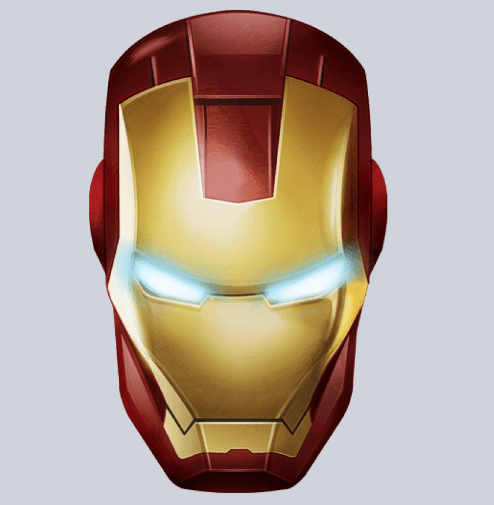

Human Factors & Ergonomics
- Human Factors Design and Evaluation
- Workflow observation and task analysis
- Usability-oriented process redesign
- Safety-focused workstation improvement
Industrial Engineering | University of Wisconsin-Madison
Designing safer, faster, and more human-centered operations through ergonomics, systems thinking, and data-driven improvement.

I am a senior Industrial Engineering student at the University of Wisconsin-Madison, with focused training in human factors design, process optimization, and industrial data analytics.
My interest in this field comes from seeing how workplace layout and system design can directly shape safety, quality, and productivity. I am motivated by projects where the result is measurable improvement for real people doing real work.
Across capstone, internships, and research, I have worked on warehouse flow, renewable energy operations, machine learning pipelines, and process improvement initiatives. I combine observation, structured analysis, and practical implementation planning.
I am seeking entry-level industrial engineering, operations, or human factors roles where I can contribute to scalable, data-informed, and human-centered system design.
Skills are grouped by practical application domain.
Reflections from IE and HF/E learning that shape how I approach design decisions.
Lessons from translating observation data into layout recommendations that teams can adopt without disrupting operations.
Read postKey takeaways from guest lectures and how they influenced my approach to evidence-based decision making.
Read postSelected projects showing problem framing, method selection, and measurable outcomes.
Problem: Layout constraints and movement inefficiencies reduced operational flow.
Methods: Material flow mapping, bottleneck analysis, workflow redesign.
Outcome: Developed practical redesign recommendations; project won First Prize.
Role: Led analysis and recommendation synthesis with partner stakeholders.
Problem: Need to estimate disease probability from large-scale imaging data.
Methods: Data preprocessing, model training, probability output validation.
Outcome: Built classifier using NIH dataset of 112,000 images.
Role: Implemented model pipeline under faculty guidance.
Problem: Improve power efficiency and reduce energy loss in plant operations.
Methods: Orientation analysis, process redesign ideation, efficiency reviews.
Outcome: Proposed orientation change yielding 5%+ output improvement.
Role: Contributed operational improvement concepts in clean energy settings.
Problem: Farmers faced opaque pricing and limited direct supplier access.
Methods: Needs identification, workflow mapping, trust and feedback feature design.
Outcome: Supported transactions totaling approximately 1 million INR.
Role: Developed the platform concept and usability-focused workflow structure.
Problem: Improve production efficiency while reducing operating cost pressure.
Methods: Production line monitoring, leadership discussion, Six Sigma framing.
Outcome: Identified structured opportunities for process and cost optimization.
Role: Participated in operational assessment and data-backed improvement dialogue.
Relevant coursework: Operations Research, Supply Chain and Operations Management, Data Management and Analysis, Quality Assurance Systems, Human Factors Design and Evaluation, Fundamentals of Industrial Data Analytics, Quality Control and Reliability.
I am open to roles in industrial engineering, operations, and human factors where structured analysis can improve safety and performance.